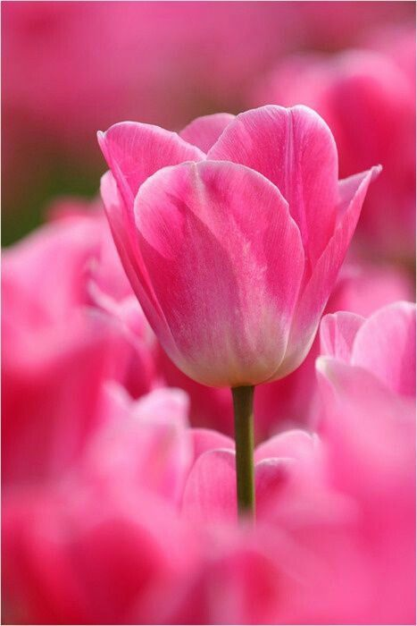

Son originarios de Asia Central, no de los Países Bajos como comúnmente se cree. El nombre "tulipán" proviene de la palabra persa "delband", que significa "turbante", debido a la forma de la flor. Se consideraron una rareza y alcanzaron precios exorbitantes en el pasado.
Significado: Los tulipanes suelen representar la perfección, el amor, el romanticismo y la pasión.
Simbolismo: En algunos casos, el color de los tulipanes puede tener un significado específico, como el rojo, que representa el amor.
Colores: Los tulipanes existen en casi todos los colores, excepto el azul y el negro.
